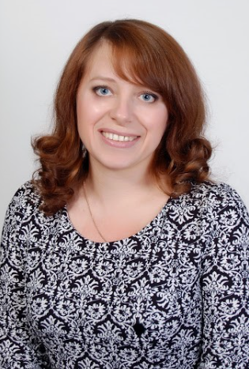
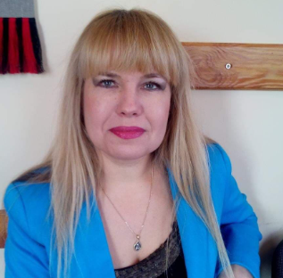
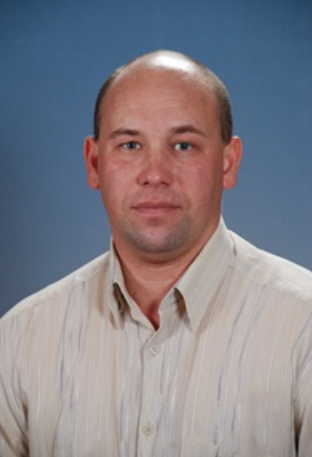
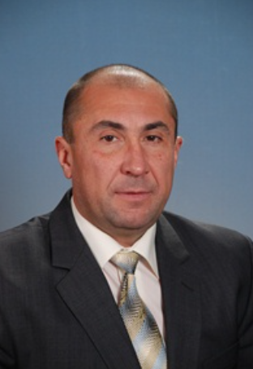
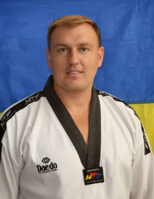

Декан факультету фізичної культури та спорту Доктор педагогічних наук, професор


Завідувачка кафедри фізичної культури та спорту Кандидат педагогічних наук Доцент

Черменський Андрій В'ячеславович.
Викладач, майстер спорту України з настільного тенісу, гравець супер ліги (1988-2001), (2010-2012) вищої ліги Польща (2003-2005), супер ліги (2011-2012)

Старший викладач кафедри, кандидат педагогічних наук, кандидат у майстри спорту з легкої атлетики, Чемпіон області (1982-1983) з легкої атлетики.

Старший викладач кафедри фізичної культури та спорту Заслужений тренер України з тхеквондо (ВТФ) Майстер спорту України з тхеквондо (ВТФ)